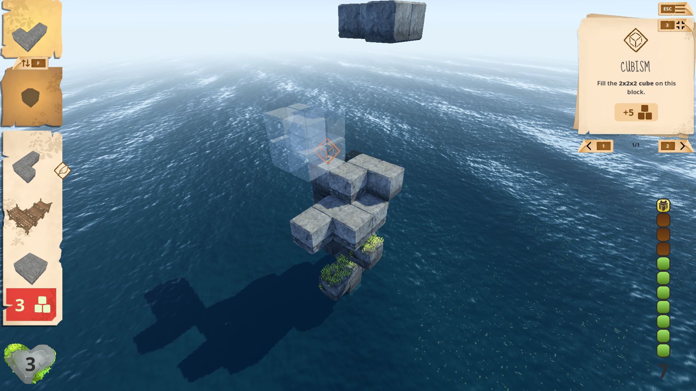

Tower of Genn


Description
Tower of Genn is a student project developed with a team of about 20 UC Irvine students using the Godot game engine and gdscript. It is currently still in development, with plans for a Steam release December of this year. The current version of the game can be played on itch.io. The game is a light strategy-puzzle game, where players place blocks strategically to build their tower as high as possible while managing their resources.
Responsibilites
I am the programming lead on this project, responsible for:
- Organizing and Running Weekly Programmer Meetings
- Assigning Tasks to Programmers
- Managing the Github Repository
- Code Review (Reviewed over 50 PRs)
Additionally, I implemented multiple game systems, including:
- Camera Movement and Controls
- Quest System
- In-game Message System
- Tutorial
- Seeded Piece Generation System
Code Samples
The GitHub for this project is a private repository. However, I have included some of the code I worked on here:
This is the script for the PieceForm class. A PieceForm is a Godot Resource (custom data structure) that stores all of the information about a specific Piece. Its used to store information about generated pieces, and used to build them when they need to be spawned in game.